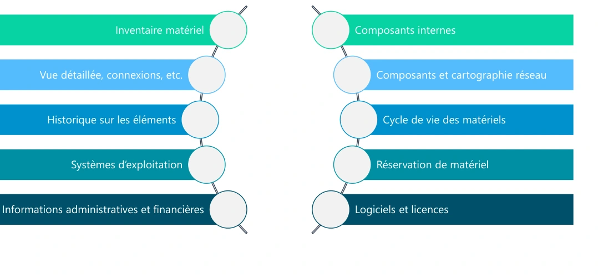
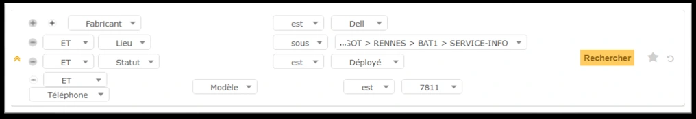
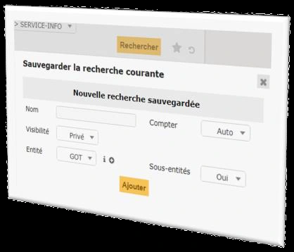
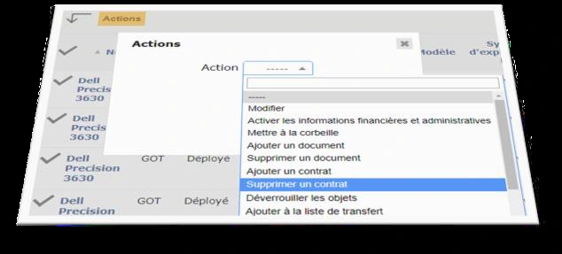
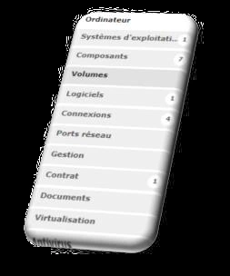
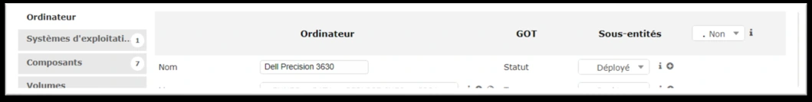

ITSM : Information Technology Service Management conforme avec ITIL
Logiciel libre sous licence GPL 100% libre
Logiciel complet pour la gestion de parc et centre de services
Plusieurs langues et plug-ins disponibles
Installation possible sous Windows et Linux
Pour les petits comme les grands systèmes d’information
GLPI : fonctionnalités gestion de parc

Fonctionnalités de gestion du parc — illustration isolée du support, page 2.
Page 3
GLPI : les interfaces
Interface simplifiée
Interface la plus restrictive
Destinée aux utilisateurs finaux
Permet de créer un ticket, suivre ses tickets, accéder aux réservations et à la FAQ
Interface standard
Interface principale de GLPI
Tous les modules y sont disponibles en fonction des droits de chacun
Utilisée pour les taches techniciens, d’administration et de configuration
3 vues de travail : personnelle, groupe et globale
GLPI : recherche rapide
Permet d’effectuer une recherche uniquement sur les champs affichés
Étendue de la recherche aux champs affichés par défaut de tous les éléments d’inventaire
Utilisation possible des caractères suivants (REGEX) :
« ^ » pour symboliser le début du champ
« $ » pour symboliser la fin du champ
« NULL » pour rechercher les champs vides
Utilisation conjointe de « ^ » et « $ » pour la valeur exacte d’un champ
Interface GLPI présentée dans le support — illustration isolée du support, page 3.
Page 4
GLPI : gestion de parc
Menu parc
Affichage par défaut des ordinateurs
Possibilité de personnaliser les colonnes affichées
Menu de recherche avancée
Export possible des données sous différents formats
Sélection du nombre d’éléments à afficher par page
Navigation entre les pages
Affichage possible de la corbeille
Interface GLPI présentée dans le support — illustration isolée du support, page 4.
GLPI : gestion de parc
Recherche basique multicritères
Possibilité de recherches combinant plusieurs critères
Combinaison possible de critères à l’aide d’opérateurs logiques
Opérateurs logiques disponibles : ET/OU – ET PAS/OU PAS
S’applique à un grand nombre de paramètres de l’objet concerné
Plusieurs critères de recherches selon le paramètre choisi
Contient – Est – N’est pas – Sous – Pas sous – Avant – Après, etc.
Critères globaux de recherche possibles

Interface GLPI présentée dans le support — illustration isolée du support, page 4.
Page 5
GLPI : gestion de parc
Recherche avancée
Possibilité d’utiliser des caractères spéciaux pour les recherches
NULL : s’assurer qu’un champ est vide
<Nb ou >Nb : utilisé dans le cas des dates, prend un nombre de mois
^ : tester le début d’un champ
$ : tester la fin d’un champ
^$ : tester une valeur exacte pour un champ
[Année]-[Mois]-[Jours] : tester un champ date
GLPI : gestion de parc
Recherche sauvegardée • Possibilité de sauvegarder ses recherches • Création d’une recherche sauvegardée • Un nom • Une visibilité/portée • Entité de rattachement avec ou sans récursivité • Comptage • Accès à ses recherches

Interface GLPI présentée dans le support — illustration isolée du support, page 5.Interface GLPI présentée dans le support — illustration isolée du support, page 5.
Page 6
GLPI : gestion de parc
Modification massive • Pour effectuer une modification sur un ensemble d’éléments • Utilisé conjointement aux recherches avancées • Généralement appliquée sur tous les éléments retournés d’une recherche • Plusieurs actions possibles

Interface GLPI présentée dans le support — illustration isolée du support, page 6.
GLPI : gestion de parc

Interface GLPI présentée dans le support — illustration isolée du support, page 6.
Fiche élément • Accessible en cliquant sur un élément • Contient toutes les informations de l’élément • Menu de navigation vertical sur la gauche • Certains onglets communs à tous les éléments • Possibilité d’afficher tous les onglets sur la même page • Navigation possible entre les fiches des éléments de la page courante

Interface GLPI présentée dans le support — illustration isolée du support, page 6.